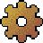

| Artefacto: Servicio |
|  |
|
Objetivo
|
Las siguientes personas utilizan los servicios:
|
Relaciones
| Artefacto del contenedor | ||
|---|---|---|
| Roles | Responsable: | Modificado por: |
| Tareas | Entrada a: | Salida de: |
Descripción
| Descripción principal | El elemento de modelo de servicio proporciona el punto final de la interacción de servicio (en terminología de servicio web) considerando que la definición de estas interacciones forme parte de la especificación de servicio. En el modelo, un servicio no sólo identifica la interfaz proporcionada sino que también identifica las interfaces necesarias (caso de las interfaces de devolución de llamada). |
|---|
Personalización
| Opciones de representación | Representación UML:
Puerto (UML 2.0), estereotipado como <<Servicio>>. Un servicio ejecutará una interfaz estereotipada como <<Especificación de servicio>>. Propiedades: allowedBindings : [*] Serie: indica el mecanismo de enlace de plataforma que puede utilizar un canal para conectarse con el servicio; algunos ejemplos son SOAP-RPC, SOAP-Doc, HTTP-Get, etc.
|
|---|
Más información
| Conceptos | |
|---|---|
| Directrices |
© Copyright IBM Corp. 1987, 2006. Reservados todos los derechos. |